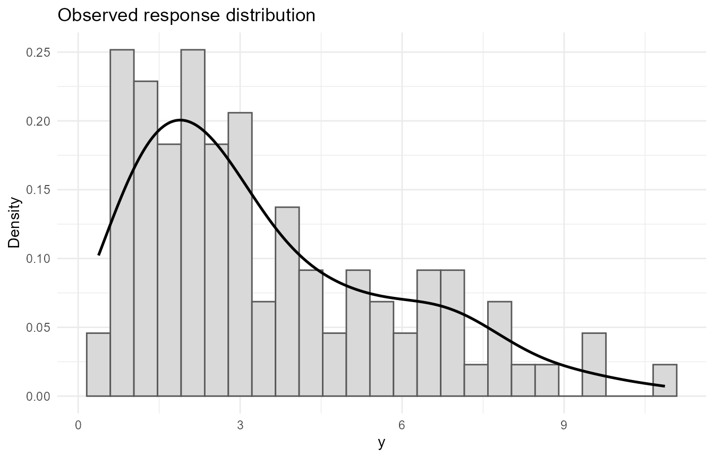
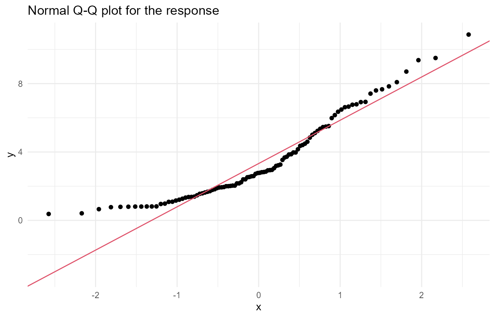
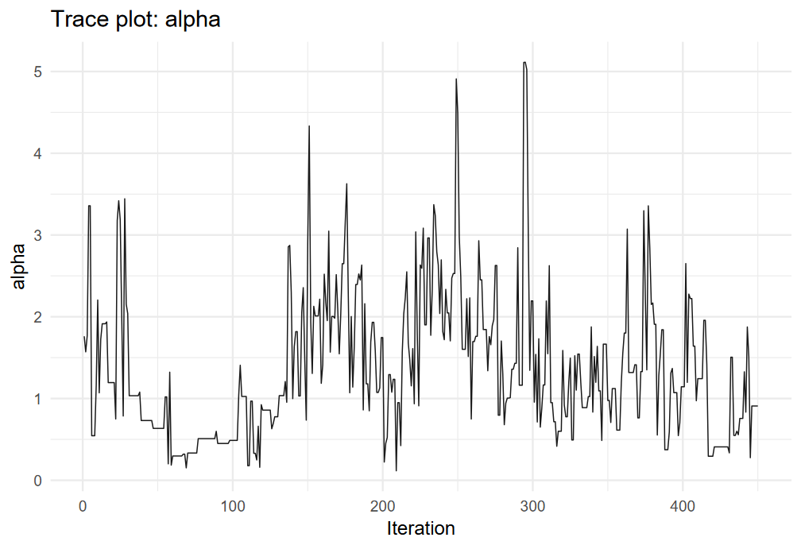
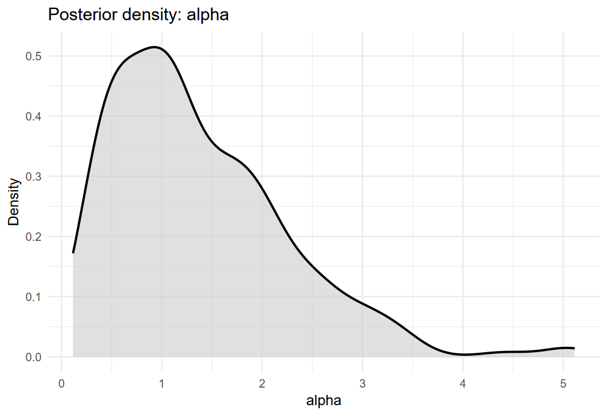
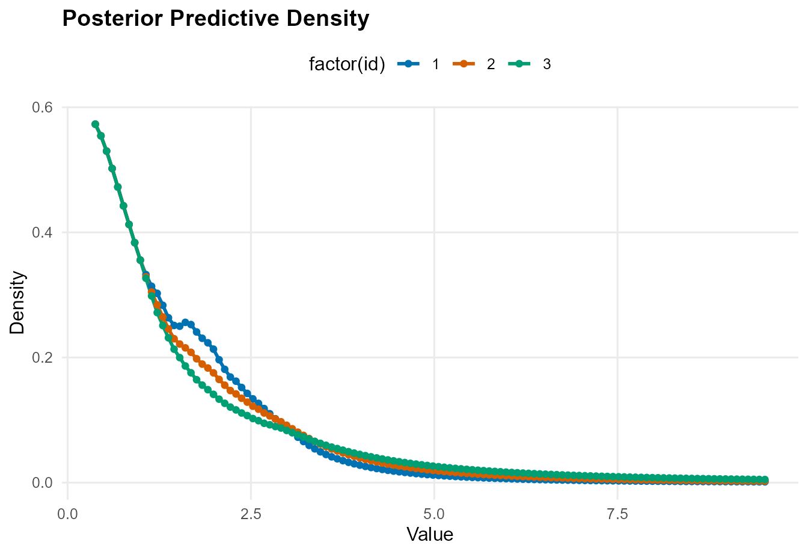
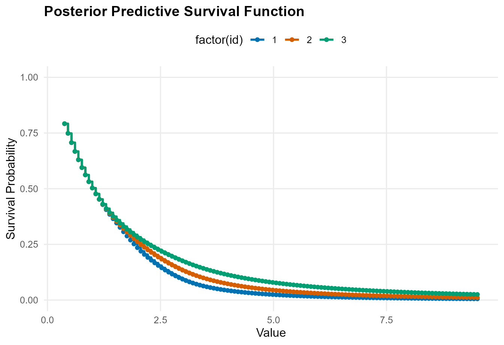
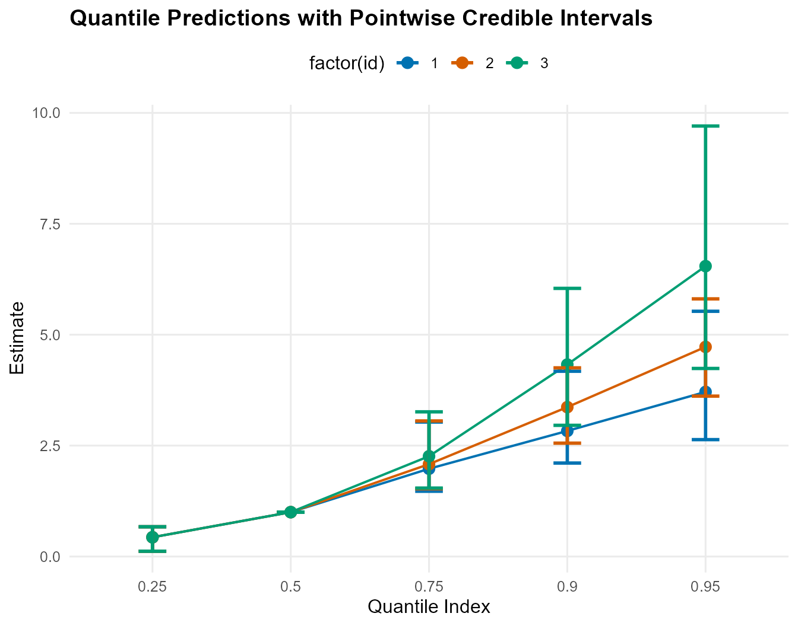
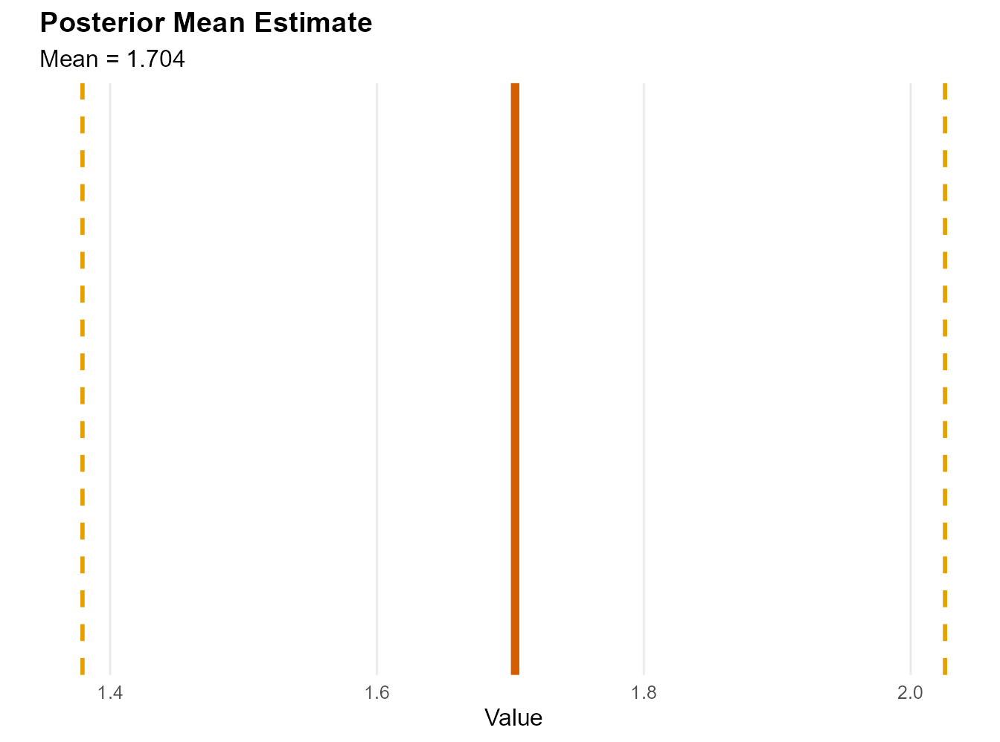
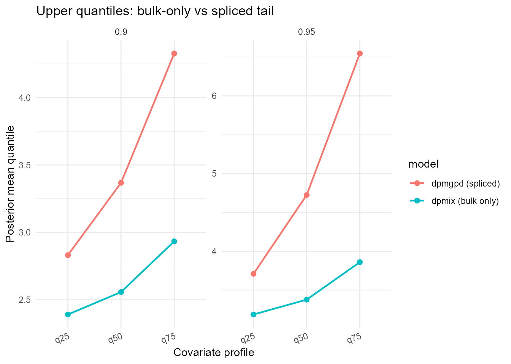

One-Arm Regression Modeling with CausalMixGPD
cmgpd_one_arm.RmdIntroduction
CausalMixGPD is designed for settings where the response
distribution is not well represented by a simple parametric family. Many
applications have heteroskedastic, skewed, or multimodal outcomes that
are better modeled with flexible mixtures, together with upper-tail
behavior that may require extrapolation. The CausalMixGPD
package addresses this setting with a spliced distribution in which a
Dirichlet process mixture (DPM) model for the core is optionally
augmented with a generalized Pareto distribution (GPD) tail (Escobar and West
1995; Balkema and Haan 1974; Pickands 1975; Coles 2001).
A conditional outcome distribution is fitted first, and densities, survival functions, quantiles, means, and restricted means are then extracted from the fitted distribution. The software paper describes the one-arm workflow that the causal and clustering extensions build on.
This vignette walks through the workflow using a built-in simulated data set. It introduces the notation and model setup, describes the main one-arm workflow functions and their statistical targets, shows the interface through executable code, and summarizes the main customization options.
Notation and statistical background
Conditional distribution as the inferential target
Let denote the response and let denote a predictor vector. For a fixed covariate value , the conditional cumulative distribution function and conditional density are
and the conditional quantile function is
In CausalMixGPD, this conditional distribution is the
primary object of inference. Scalar summaries such as means or upper
quantiles are derived from the fitted distribution rather than modeled
separately. That design is important because it keeps different
summaries internally coherent and avoids issues such as quantile
crossing that can arise when quantiles are estimated one at a time.
Bulk model: Dirichlet process mixtures
Below a tail threshold, the package uses a DPM regression model. If denotes a chosen kernel family, the bulk conditional density can be written as
where denotes a random mixing distribution having a Dirichlet process prior such that the mixing proportions obey and , and the kernel parameters can be either fixed or covariate-dependent (Ferguson 1973; Sethuraman 1994; Neal 2000). The mixture formulation provides much flexibility in dealing with multimodality, skewness, nonuniform local dispersion, and potential latent grouping without requiring any prespecification of the number of mixture components.
From an implementation standpoint, the bulk model specification is
largely driven by four main inputs: kernel,
backend, components, and
param_specs. The first two control the kernel function
and the underlying representation, respectively, the third is the
internal truncation level, and the fourth decides whether the kernel
parameters are fixed, drawn from priors, or regressed.
Tail model: generalized Pareto exceedances
When the upper tail requires explicit modeling, the package replaces the part of the density above a threshold by a GPD component. For exceedances over the threshold, define
Under the peaks-over-threshold framework, the conditional excess distribution is approximated by a GPD when the threshold is sufficiently high (Balkema and Haan 1974; Pickands 1975; Coles 2001). For , with scale parameter and shape parameter , the GPD cumulative distribution function is
The support is when , and when . The shape parameter controls the tail regime: negative values imply a finite upper endpoint, gives an exponential-type tail, and positive values correspond to heavy tails.
Spliced bulk-tail construction
The key statistical idea in the package is the spliced model. Let and denote the bulk CDF and density, and let collect the tail parameters. Write
for the bulk probability mass below the threshold. Then the spliced conditional CDF is
and the corresponding conditional density is
This formulation preserves the flexibility of the mixture in the central region while forcing the tail to obey an EVT-motivated form. The splice is continuous at by construction, and the tail density is normalized by the bulk survival at the threshold.
The quantile function follows the same two-part logic. For quantile levels below the threshold mass, the package inverts the bulk CDF. For levels above the threshold mass, the probability index is rescaled to the exceedance scale:
Then the upper-tail quantiles are obtained from the GPD quantile function evaluated at . This distinction explains why upper quantile predictions are one of the main places where a spliced fit can differ meaningfully from a bulk-only fit.
Means, restricted means, and existence conditions
When the kernel mean exists and the tail satisfies
,
the conditional mean of the spliced model is finite. In that case the
one-arm interface can report ordinary means through
predict(type = "mean"). When the tail is too heavy for a
finite mean or when the user prefers a bounded summary, the package
provides restricted means through predict(type = "rmean"),
which returns
for a user-supplied cutoff . Restricted means are often easier to interpret in heavy-tailed settings because they remain finite and are less dominated by a few very large posterior draws. The software paper emphasizes this distinction explicitly in the one-arm prediction section.
Function map for the one-arm workflow
The main exported functions used in this vignette are listed below.
-
dpmgpd()fits a one-arm spliced DPM-GPD model. -
dpmix()fits the corresponding bulk-only DPM model. -
summary()reports posterior summaries from a fitted object. -
params()extracts parameter summaries in a more direct programmatic form. -
plot()provides diagnostic or summary graphics for fitted and predicted objects. -
predict()returns posterior summaries for densities, survival functions, quantiles, means, restricted means, medians, samples, and fitted values.
These are not separate modeling frameworks. They are different ways of interrogating the same posterior distribution after fitting a one-arm model.
Package setup
For a vignette, it is reasonable to use modest MCMC settings so the code remains runnable on ordinary hardware. In a substantive analysis, longer runs and sensitivity checks are recommended.
mcmc_vig <- list(
niter = 1200,
nburnin = 300,
thin = 2,
nchains = 2,
seed = 2026
)Data
We use the bundled dataset nc_posX100_p3_k2, which
contains a positive response and three predictors. It is convenient for
illustrating both the bulk-only and spliced workflows.
data("nc_posX100_p3_k2", package = "CausalMixGPD")
onearm_dat <- data.frame(
y = nc_posX100_p3_k2$y,
nc_posX100_p3_k2$X
)A quick visual check helps motivate flexible modeling.
p1 <- ggplot(onearm_dat, aes(x = y)) +
geom_histogram(aes(y = after_stat(density)), bins = 25,
fill = "grey85", colour = "grey35") +
geom_density(linewidth = 0.9) +
labs(x = "y", y = "Density",
title = "Observed response distribution") +
theme_minimal()
p2 <- ggplot(onearm_dat, aes(sample = y)) +
stat_qq() +
stat_qq_line(colour = 2) +
labs(title = "Normal Q-Q plot for the response") +
theme_minimal()
p1
p2
The response is positive and the empirical distribution is skewed.
That makes the dataset a natural candidate for positive-support kernels
such as gamma, lognormal, or
invgauss. If the scientific question involves high
quantiles or tail probabilities, a spliced GPD tail can also be
justified.
Fitting a spliced one-arm model
We begin with dpmgpd(), which fits the bulk mixture
together with an active GPD tail. The article presents this as the main
one-arm interface for the spliced workflow, with the formula describing
the conditional outcome model and the backend selecting the latent DPM
representation.
To keep vignette build time predictable, outputs from this vignette
are loaded from
inst/extdata/one_arm_outputs.rds (created by
tools/.Rscripts/build_vignette_fits.R). This contains only
the prediction/summary objects needed to render the figures and tables,
rather than the full fitted MCMC objects. The code chunks below show the
package calls you would run in a full analysis; the rendered tables and
figures are produced from the shipped artifacts in companion chunks with
hidden source.
fit_spliced <- dpmgpd(
formula = y ~ x1 + x2 + x3,
data = onearm_dat,
backend = "sb",
kernel = "lognormal",
components = 5,
mcmc = mcmc_vig
)A fitted one-arm object supports posterior summaries and diagnostic plots. To avoid storing the full fit, we include static diagnostics generated offline.
summary(fit_spliced)#> MixGPD summary | backend: Stick-Breaking Process | kernel: Lognormal Distribution | GPD tail: TRUE | epsilon: 0.025
#> n = 100 | components = 5
#> Summary
#> Initial components: 5 | Components after truncation: 1
#>
#> Summary table
#> parameter mean sd q0.025 q0.500 q0.975
#> weights[1] 0.614 0.203 0.295 0.586 1
#> alpha 1.129 0.867 0.1 0.961 3.329
#> beta_tail_scale[1] 0.518 0.19 0.146 0.511 0.883
#> beta_tail_scale[2] 0.017 0.28 -0.528 0.022 0.548
#> beta_tail_scale[3] 0.206 0.223 -0.252 0.212 0.628
#> beta_threshold[1] -0.308 0.155 -0.602 -0.307 -0.006
#> beta_threshold[2] -0.034 0.213 -0.441 -0.037 0.396
#> beta_threshold[3] -0.09 0.268 -0.553 -0.106 0.41
#> sdlog_u 0.893 0.289 0.275 0.913 1.465
#> tail_shape 0.422 0.107 0.208 0.421 0.649
#> sdlog[1] 1.344 0.639 0.592 1.178 3.152
#> beta_meanlog[1,1] 0 0 0 0 0
#> beta_meanlog[1,2] 0 0 0 0 0
#> beta_meanlog[1,3] 0 0 0 0 0
# Posterior density for monitored parameters (e.g. alpha); see plot.mixgpd_fit().
plot(fit_spliced, family = "density", params = "alpha")
The exact parameter names stored by the object depend on the chosen
kernel and backend, but the general interpretation is stable. The
concentration parameter controls the effective complexity of the
mixture, while the monitored bulk and tail parameters determine the
conditional distribution used for all later prediction tasks. Use
params(fit_spliced) when you need the posterior draws as a
matrix for custom summaries.
Posterior prediction from the spliced model
Conditional density and survival summaries
The package article notes that density and survival summaries are returned by evaluating the corresponding functional draw by draw and then summarizing over retained MCMC draws. We illustrate that at three representative predictor profiles formed from empirical quartiles.
x_new <- as.data.frame(lapply(
onearm_dat[, c("x1", "x2", "x3")],
stats::quantile,
probs = c(0.25, 0.50, 0.75),
na.rm = TRUE
))
rownames(x_new) <- c("q25", "q50", "q75")
x_new#> x1 x2 x3
#> q25 -0.59851252 -0.57151934 -0.7224762264
#> q50 0.02874559 -0.01658997 0.0004347721
#> q75 0.69727001 0.41546653 0.5516024827
y_grid <- seq(min(onearm_dat$y), quantile(onearm_dat$y, 0.99), length.out = 120)
pred_dens <- predict(
fit_spliced,
newdata = x_new,
y = y_grid,
type = "density",
interval = "credible",
level = 0.95,
store_draws = FALSE
)
plot(pred_dens, type = "density", facet = "covariate")
y_grid <- seq(min(onearm_dat$y), quantile(onearm_dat$y, 0.99), length.out = 120)
pred_surv <- predict(
fit_spliced,
newdata = x_new,
y = y_grid,
type = "survival",
interval = "credible",
level = 0.95,
store_draws = FALSE
)
plot(pred_surv)
These summaries show how the fitted conditional distribution changes across covariate profiles. In practice, that helps determine whether predictors act mostly through a location shift, through dispersion, or through upper-tail behavior.
Quantiles, means, and restricted means
The one-arm workflow is especially useful when the scientific target is not just the density itself but one or more functionals of the conditional distribution. The article highlights quantiles and mean-type summaries as central examples, with restricted means remaining available even when the ordinary mean is unstable or undefined under a heavy tail.
pred_quant <- predict(
fit_spliced,
newdata = x_new,
type = "quantile",
index = c(0.25, 0.50, 0.75, 0.90, 0.95),
interval = "credible",
level = 0.95,
store_draws = FALSE
)
plot(pred_quant)
pred_mean <- predict(
fit_spliced,
newdata = x_new,
type = "mean",
interval = "hpd",
level = 0.90,
store_draws = FALSE
)
plot(pred_mean)
cutoff_val <- as.numeric(stats::quantile(onearm_dat$y, 0.95))
pred_rmean <- predict(
fit_spliced,
newdata = x_new,
type = "rmean",
cutoff = cutoff_val,
interval = "hpd",
level = 0.90,
store_draws = FALSE
)
knitr::kable(pred_rmean$fit_df, format = "html", row.names = FALSE, digits = 4)| id | estimate | lower | upper |
|---|---|---|---|
| 1 | 2.1259 | 1.4484 | 2.7973 |
| 2 | 2.2705 | 1.6675 | 3.0495 |
| 3 | 2.4575 | 1.6781 | 3.1427 |
The restricted mean is often a good complement to upper-tail quantiles. It preserves the original response scale, is always finite for finite cutoffs, and gives a more stable summary when a few extreme draws can dominate the ordinary mean.
Comparing bulk-only and spliced fits
The package also provides a bulk-only wrapper, dpmix(),
which removes the GPD tail while leaving the general predictive
interface intact. The article presents this as the natural special case
obtained when the tail component is switched off.
fit_bulk <- dpmix(
formula = y ~ x1 + x2 + x3,
data = onearm_dat,
backend = "sb",
kernel = "lognormal",
components = 5,
mcmc = mcmc_vig
)#> Bulk-only fit computed offline; see quantile comparison below.
quant_bulk_fit_df <- predict(
fit_bulk,
newdata = x_new,
type = "quantile",
index = c(0.90, 0.95),
interval = "credible",
level = 0.95,
store_draws = FALSE
)$fit_df
quant_spliced_fit_df <- predict(
fit_spliced,
newdata = x_new,
type = "quantile",
index = c(0.90, 0.95),
interval = "credible",
level = 0.95,
store_draws = FALSE
)$fit_df
qb <- quant_bulk_fit_df
qb$model <- "dpmix (bulk only)"
qs <- quant_spliced_fit_df
qs$model <- "dpmgpd (spliced)"
qc <- rbind(qb, qs)
qc$profile <- rownames(x_new)[as.integer(qc$id)]
ggplot(qc, aes(x = profile, y = estimate, colour = model, group = model)) +
geom_line(linewidth = 0.8) +
geom_point(size = 2) +
facet_wrap(~index, scales = "free_y", ncol = 2) +
labs(
x = "Covariate profile",
y = "Posterior mean quantile",
title = "Upper quantiles: bulk-only vs spliced tail"
) +
theme_minimal() +
theme(axis.text.x = element_text(angle = 20, hjust = 1))
This comparison is one of the most revealing diagnostics in a heavy-tailed application. Bulk-only and spliced models can look very similar in the center of the distribution, yet their upper-tail quantile predictions can differ materially because only the spliced model imposes an explicit EVT-based tail form.
Analysis summary
The one-arm workflow is easiest to interpret when the fitted conditional distribution is the main object of interest. In this example, the positive-support mixture captures the main structure of the response across covariate profiles, while the optional GPD tail changes how upper-tail mass is extrapolated. The density and survival summaries describe the overall shape of the fitted conditional distribution, the quantile summaries highlight profile-specific location and tail changes, and the restricted mean provides a bounded summary on the original response scale.
From a practical modeling standpoint, dpmix() and
dpmgpd() are two related model classes with the same
summary interface. The choice between them should be driven by the role
of the upper tail in the analysis. If the target is mainly bulk
prediction, a bulk-only mixture may be adequate. If inference on extreme
upper quantiles, tail probabilities, or means sensitive to upper-tail
behavior matters, the spliced formulation is often more appropriate.
Customization options for one-arm models
This section collects the main arguments that users typically customize in one-arm analyses. The package appendix provides the same controls in compact reference form.
Model specification options
kernel selects the bulk family. Positive-support choices
include "gamma", "lognormal",
"invgauss", and "amoroso"; real-line kernels
include "normal", "laplace", and
"cauchy". The support of the response should guide this
choice.
backend determines how the DPM is represented
internally. The main options are "sb" for stick-breaking
and "crp" for a Chinese restaurant process
representation.
components controls the truncation size used for the
finite approximation to the infinite mixture.
GPD is implicit in the wrapper choice:
dpmgpd() activates the spliced tail, whereas
dpmix() fits the bulk-only model.
Parameter and prior customization
param_specs is the central argument for advanced model
control. Each kernel or tail parameter can be assigned one of three
modes: a fixed value, a prior-driven random value, or a covariate-linked
regression structure. This is the main route for changing whether a
threshold, scale, or kernel parameter is held constant or allowed to
vary with predictors.
alpha_random controls whether the DPM concentration
parameter is treated as random under its prior or fixed.
epsilon controls downstream truncation and summary
behavior for very small mixture components.
MCMC and monitoring options
mcmc contains the iteration controls niter,
nburnin, thin, nchains, and
seed.
monitor chooses how much of the posterior state is
retained. The usual values are "core" and
"full".
monitor_latent = TRUE requests latent allocation labels
in the retained output, and monitor_v = TRUE stores
stick-breaking fractions for SB fits.
Prediction options
predict() supports type = "density",
"survival", "quantile", "mean",
"rmean", "median", "sample", and
"fit".
For density and survival summaries, the argument y
supplies the evaluation grid.
For quantile summaries, the argument index supplies the
probability levels.
For restricted means, the argument cutoff defines the
truncation point and nsim_mean can control Monte Carlo
evaluation when applicable.
interval can be set to "credible",
"hpd", or NULL, and level
controls the posterior interval coverage level.
Session information
sessionInfo()
#> R version 4.5.3 (2026-03-11 ucrt)
#> Platform: x86_64-w64-mingw32/x64
#> Running under: Windows 11 x64 (build 26200)
#>
#> Matrix products: default
#> LAPACK version 3.12.1
#>
#> locale:
#> [1] LC_COLLATE=English_United States.utf8
#> [2] LC_CTYPE=English_United States.utf8
#> [3] LC_MONETARY=English_United States.utf8
#> [4] LC_NUMERIC=C
#> [5] LC_TIME=English_United States.utf8
#>
#> time zone: America/New_York
#> tzcode source: internal
#>
#> attached base packages:
#> [1] stats graphics grDevices datasets utils methods base
#>
#> other attached packages:
#> [1] ggplot2_4.0.2 CausalMixGPD_0.7.0 nimble_1.4.0
#>
#> loaded via a namespace (and not attached):
#> [1] gtable_0.3.6 jsonlite_2.0.0 dplyr_1.2.0
#> [4] compiler_4.5.3 renv_1.1.7 tidyselect_1.2.1
#> [7] parallel_4.5.3 jquerylib_0.1.4 systemfonts_1.3.1
#> [10] scales_1.4.0 textshaping_1.0.4 yaml_2.3.12
#> [13] fastmap_1.2.0 lattice_0.22-9 coda_0.19-4.1
#> [16] R6_2.6.1 labeling_0.4.3 generics_0.1.4
#> [19] igraph_2.2.1 knitr_1.51 htmlwidgets_1.6.4
#> [22] tibble_3.3.0 desc_1.4.3 pillar_1.11.1
#> [25] bslib_0.10.0 RColorBrewer_1.1-3 rlang_1.1.7
#> [28] cachem_1.1.0 xfun_0.56 S7_0.2.1
#> [31] fs_1.6.6 sass_0.4.10 cli_3.6.5
#> [34] withr_3.0.2 pkgdown_2.1.3 magrittr_2.0.4
#> [37] digest_0.6.39 grid_4.5.3 lifecycle_1.0.5
#> [40] vctrs_0.7.1 evaluate_1.0.5 pracma_2.4.6
#> [43] glue_1.8.0 farver_2.1.2 numDeriv_2016.8-1.1
#> [46] ragg_1.5.0 rmarkdown_2.30 tools_4.5.3
#> [49] pkgconfig_2.0.3 htmltools_0.5.9